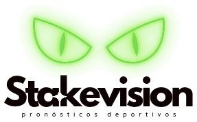

Aún no hay pick gratis publicado hoy. Llega primero al canal de Telegram.
Recíbelo en Telegram

Vemos el partido antes del pitazo.
Análisis de fútbol con datos, no corazonadas. Cada pick se publica antes del partido con su cuota, su stake y su porqué, y queda en un historial público: verdes y rojas.
+18 · Juega con responsabilidad · Las apuestas implican riesgo de pérdida
Así se ve cada pick
Fútbol · Liga
Local vs Visita
MercadoAmbos marcan
Cuota1.85
Stake2/10
Por qué: cuota justa estimada contra cuota disponible, forma reciente y el dato clave del partido.
Publicado antes del partido · registrado en el historial
—Picks cerrados
—Yield acumulado
—Tasa de acierto
—Cuota media
Cifras calculadas automáticamente desde el historial público.
El pick gratis de hoy
No te lo contamos: te lo mostramos.
Un pick completo, con el mismo análisis que reciben los miembros VIP.
Cómo funciona
Menos picks, mejor elegidos.
Si un partido no tiene valor, no se publica. Preferimos un día con menos picks a un pick por cumplir.
1. Analizamos
Forma reciente, contexto del partido y estadísticas por mercado.
2. Medimos el valor
Comparamos cada cuota con nuestra cuota justa estimada. Solo pasa lo que paga más de lo que vale, entre 1.65 y 2.00.
3. Publicamos y registramos
Cada pick sale antes del partido con cuota, stake y justificación, y entra al historial con su resultado.
Historial público
Verdes y rojas. Todas.
Los picks VIP aparecen aquí cuando su partido empieza. Nada se edita ni se borra.
| Fecha | Partido | Mercado | Cuota | Stake | Resultado |
|---|---|---|---|---|---|
| El historial comienza el día del lanzamiento. | |||||
Planes
Empieza gratis. Sube al VIP cuando los números te convenzan.
Canal gratis
$0
Telegram
- 1 a 2 picks al día
- Resultados en el historial público
- Contenido sobre bankroll y valor
VIP mensual
Recomendado$14.990 / mes
Canal privado de Telegram
- 3 picks diarios en promedio
- Análisis completo de cada pick
- Guía de gestión de bankroll
- Soporte por chat
VIP trimestral
$39.990 / 3 meses
Ahorras $4.980 frente a 3 meses del plan mensual
- Todo lo del VIP mensual
- Precio fijo durante todo el período
- Pensado para evaluar resultados a mediano plazo
Cómo entras al VIP
- 01Crea tu cuentaCon tu correo, para asociar la suscripción.
- 02Elige y paga tu planDébito, crédito o transferencia. Sin renovación automática.
- 03Recibe tu link únicoTe llega por correo; sirve para una sola persona.
- 04Entra al canalY recibe los picks desde ese mismo día.
Hablemos claro
Lo que no te vamos a prometer.
Apuestas seguras
No existen. Cualquiera que te las ofrezca te está vendiendo humo.
Ganancias garantizadas
Buscamos rentabilidad a largo plazo, y habrá rachas negativas.
Recuperar pérdidas
Nunca subas el stake para recuperar. Apuesta solo lo que puedas perder.
Resultados maquillados
Todo queda en el historial, incluidas las rojas.
Juego responsable
Apostar debe seguir siendo entretención.
01
Define un bankroll
Un monto separado, que puedas perder sin afectar gastos, deudas ni ahorros.
02
Respeta el stake
Cada unidad es un porcentaje pequeño y fijo de tu bankroll. Nunca "todo a un partido".
03
No persigas pérdidas
Después de una roja, el siguiente pick lleva el mismo stake de siempre.
04
Ponte límites
Un tope mensual y pausas cuando el juego deja de ser diversión.
¿Sientes que perdiste el control? Habla con alguien de confianza y busca apoyo. No estás solo.
- Salud Responde (MINSAL): 600 360 7777, orientación en salud.
- Jugadores Anónimos Chile: jugadoresanonimos.cl, grupos de apoyo.
- Autoexclusión en casinos (SCJ): scj.cl, inscripción gratuita.
- Si tienes pensamientos de hacerte daño: llama al *4141, gratuito y disponible las 24 horas.
Preguntas frecuentes
¿Qué deportes cubren?
Partimos con fútbol, donde hay mejores datos. Más adelante sumaremos tenis y básquet.
¿Cuántos picks recibo en el VIP?
3 picks diarios en promedio. Si una jornada no tiene partidos con valor, publicamos menos: no rellenamos para cumplir una cuota.
¿Qué significa el stake?
Es la parte de tu bankroll que sugerimos para cada pick, en una escala de 1 a 10 (aprox. % del bankroll). Más stake no significa "más seguro", sino mayor confianza relativa.
¿Cuándo abre el VIP?
Estamos en etapa de prueba, construyendo el historial público. Únete al canal gratis para enterarte primero.
¿Puedo cancelar? ¿Hay reembolso?
Sí, cuando quieras; conservas el acceso hasta el final del período pagado. Si es tu primera suscripción y no te convence, te devolvemos el 100% si lo pides dentro de 10 días desde la compra. No hay reembolsos por resultados de las apuestas: vendemos análisis, no ganancias.
¿Stakevision es una casa de apuestas?
No. Entregamos análisis y opiniones; no recibimos apuestas ni manejamos tu dinero.